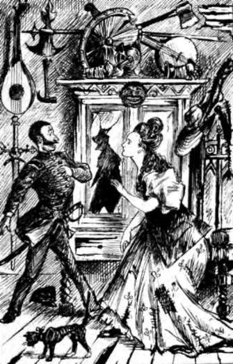

Ushering In The Lady Of The Chateau With All The Forms And Graces. Continued
Description
This section is from the book "Smoked Glass", by Orpheus C. Kerr. Also available from Amazon: Smoked Glass.
Ushering In The Lady Of The Chateau With All The Forms And Graces. Continued
"What for?" said I.
"Hum!" says Villiam, rubbing his arm, "methinks she loves me; and she's winkin' at me now".
Alas! for the quick susceptibility of woman's heart! Matilda was indeed winking and motioning in an extraordinary manner just at that instant, and seemed anxious to remind the man of her choice that the terrible fact of their long and secret attachment must on no account be divulged to her brothers. Thus it is that young Love, when first an occupant of woman's nature-bold, yet timid-is ever making an arrow escape!
The mallets with which the game of croquet is played not having arrived from Europe, we were supplied instead with shovels, marked "U. S.;" and as the requisite balls were not found in the barrels from whence the half-hoops were ingeniously extracted, we used apples in their places.
With much chivalry of manner did the dignified Munchausen advance with his shovel and strike an apple through half the hoops, closely followed by Matilda Munchausen, who beckoned Villiam to follow her and struck her apple with still better effect. Villiam, with a heavenly smile upon his countenance, attended to his fruit with equal skill, and the Provisional Governor and I came after in a state of feverish excitement. Wildly raged the manly sport, and all the apples were close together near the last wicket, when there suddenly appeared upon the scene a ravenous pig, of severe visage, who incontinently devoured them in a twinkling of the eye.
"By chivalry!" exclaimed Captain Munchausen, "he's, eaten up all the crockay".
"Well, I declare!" said Matilda Munchausen, "to have all spoiled by a pig!"
"'Ah!" says Villiam, softly, "be not offended with the accident, sweet warbler. Is not a pig," says Villiam, tenderly, "like a bride, when he plights his troth?"
The noble girl seemed not to hear this beautiful idea; for she looked quickly around to be sure that her brothers were not looking, and then, grasping his nearest hand, she murmured, earnestly,-
"You will not disappoint me?"
"Never!" says Villiam, with dreadful intensity.
She put her face nearer to his, and hissed,-
"Couldn't you put it in a letter?"
"Ah! " says Villiam, beginning to dance ecstatically, "let me put it upon that lovely brow".
"You are kyind, very kyind, sir," whispered the maiden, hurriedly, " but it would not be right to accept such a thing from a stranger".
"Hum! " says Villiam, musingly, "wilt meet me this evening by moonlight alone in the back kitchen? "
" Will you tell me all, then ? " she asked, eagerly. Villiam nodded after the manner of an incorrigible Byron.
"Then I will be there," said Matilda; and flew to regain her brothers who were already walking on.
From that moment, until nightfall, Captain Villiam Brown spake never a word; but I saw that he was steadily growing more depressed, and once or twice I caught him contemplating, with suppressed sighs, a photograph of his mother. Oh, how beautiful is that attribute of our common nature which, at any age, makes our thoughts revert to " Mother" at the approach of a great danger ! Even the old man, on the verge of bankruptcy, has been heard to refer respectfully to his mother as one who always cheerfully predicted that he would yet come to want, because, as a boy, he had refused to eat crust; and the young man, whether in a storm at sea, or threatened with marriage, equally regrets having left that mother's side.
As the stars commenced to appear, I walked out with Villiam, and endeavored to calm his natural fears. I told him, that if he felt really unable to purchase one new bonnet, three pairs of balmorals, six lace handkerchiefs and four pairs of gloves per month, it was his duty to avoid making any proposals; but that he must seize her arm the moment she drew a pistol, and trust me to come to his assistance with two muskets from behind the mangle.
"My fren'," says Villiam, with deep emotion, " would you have me rooflessly destroy all that young being's vision of going to the milliner's and pricing expensive silks all the way down Broadway? No!" says Villiam, sternly, " I will not blight her young life thus, even with silk at its present exciting prices."'
Not having it in my heart to protest further against the sweet romance of two fond hearts, I silently armed myself with two muskets from the Mackerel camp on the lawn, and hastened in advance to conceal myself behind the mangle in the back kitchen.
Soon Matilda Munchausen entered by one door, with a lighted candle in her hand, and Villiam came through another with feeble steps.
" Sir," said Matilda Munchausen, "our seneschal, who is ju3t outside the door in the hall, must not be kept waiting too long before locking up the chateau for the night; and so you will please be brief; but, at the same time, I must know all, and I will see if I have enough money".
"Money ! " says Villiam, going down upon his knees; "don't think money will buy what I could give thee freely ! "
"I am sorry, sir, to find you so intoxicated that you cannot stand on your feet," returned the maiden; "and perhaps you can tell me better at another time".
" Madam," says Villiam, rising with dignity to his feet again, " I had reason to suppose that you were interested in some remarks I made to-day".
" Yes, yes, I was," said Matilda.
A love of a bonnet.
" You asked me to tell you in a letter, and now meet me here on condition of my telling you all ? "
"Yes, yes! " ejaculated the now agitated Matilda Munchausen, " and now tell me, how was it trimmed ? "
" Ah ! " says Villiam, " how was who trimmed ? "
Miss Munchausen ate a peppermint drop as she sat on the refrigerator, and says she, -
" Why, the bonnet of course. That bonnet you commenced telling about this morning".
Villiam slapped his left leg with tremendous vehemence, and says he, -
" Come out with the muskets, my fren', and behold the wreck of what was once a man".
As I appeared from behind the mangle, Matilda fled from the kitchen with precipitation, and the seneschal and I stood alone with him.
"Well, my Marshal Ney," said I, pleasantly, "how was it trimmed? "
" With ' Illusion,' my fren'," says Villiam, sadly; "with 'Illusion: "
Better was it thus for him, my boy, than if he had really fallen a matrimonial victim to that strong-minded sex whose occasional manner of resenting breaches of promise seems to indicate, that said promise, as they comprehend it, by anticipation, is promise of breeches.
Yours, indignantly,
Orpheus C. Kerr.
Continue to:
- prev: Letter XIII. Ushering In The Lady Of The Chateau With All The Forms And Graces
- Table of Contents
- next: Letter XIV. Chronicling The Arrival Of P. Penruthers As Suitor